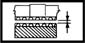

GEAR SYNCHRONISERS
- Path
- Technical Data > Manufacturing data > 21 GEARBOX > 2110 MANUAL GEARBOX AND DIFFERENTIAL > GEAR SYNCHRONISERS
- Kind
- technical data / specifications
- Applies to
- all engines; all production periods
- Interactive page
- https://sloeber94.github.io/elrnDB-a156/en/#/3233562
Applies to: all engines; all production periods
Gear. teeth clearance and synchronizer ring support. surfaces. (mm) | Validity |  | ||
|---|---|---|---|---|
>= 0.8 | 1.9 JTD 8v 2.4 JTD 10v | |||
Gear. teeth clearance and synchronizer ring support. surfaces (mm) | Validity | |||
|---|---|---|---|---|
>= 0.8 | 2.5 V6 3.2 V6 | |||